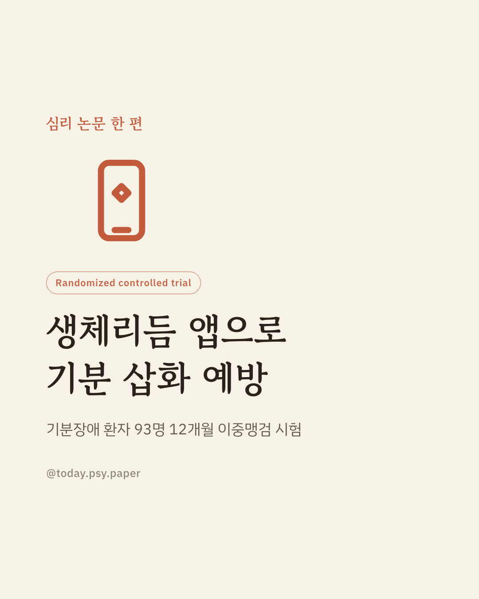
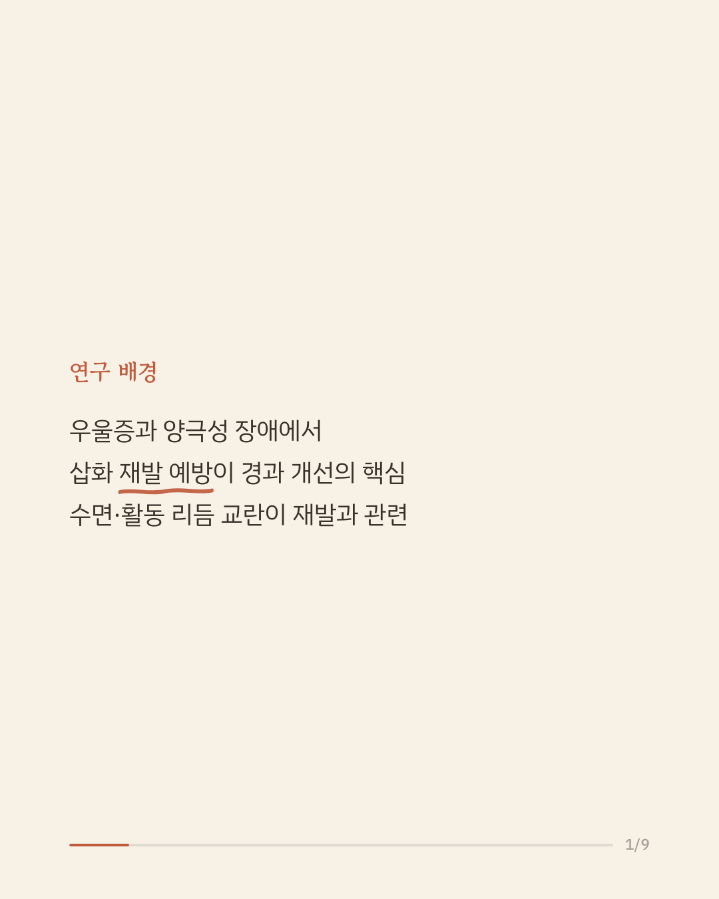
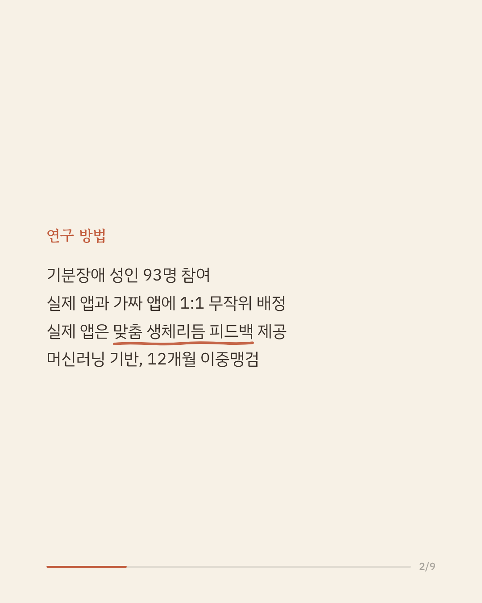
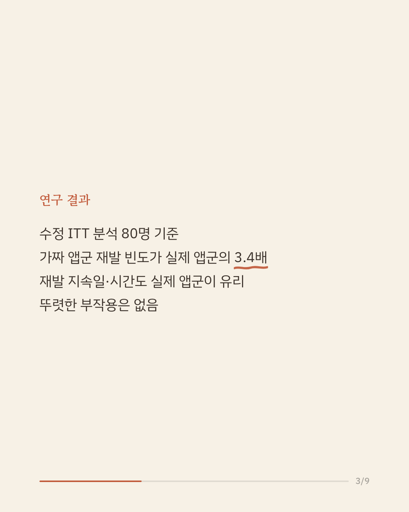
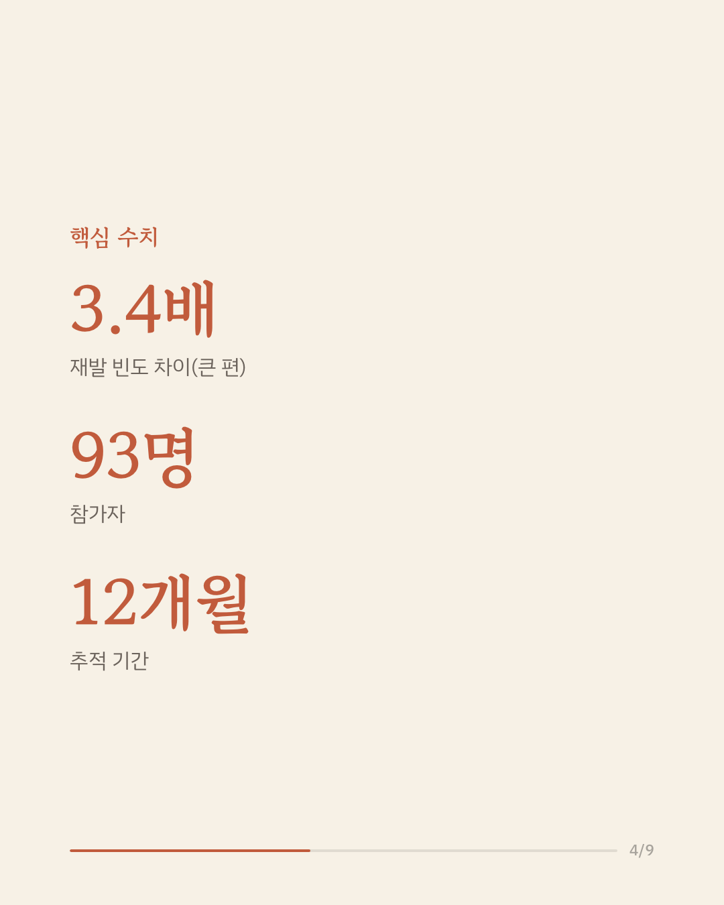
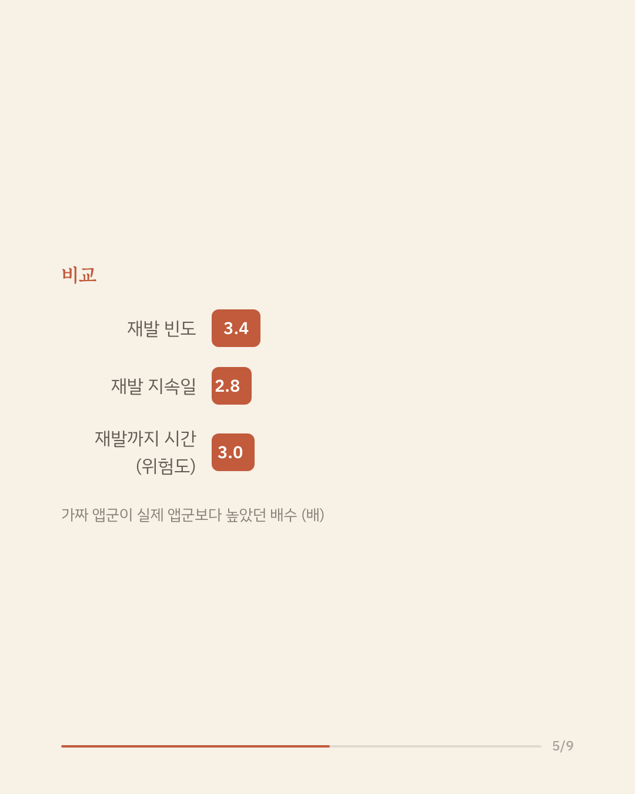
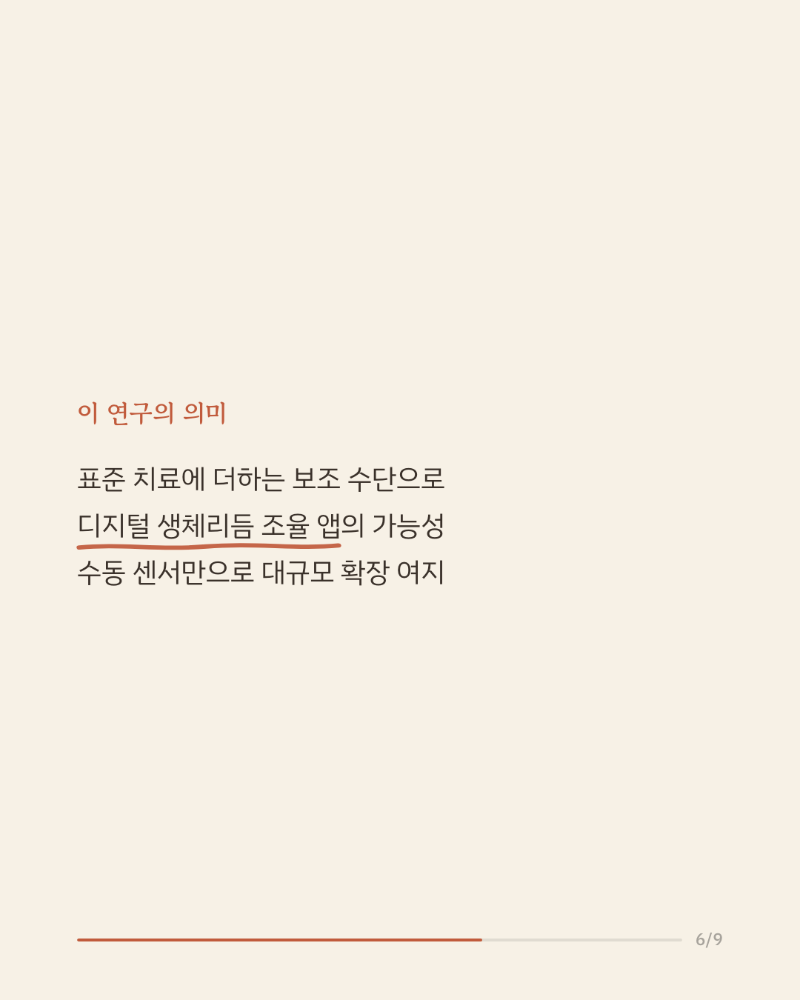
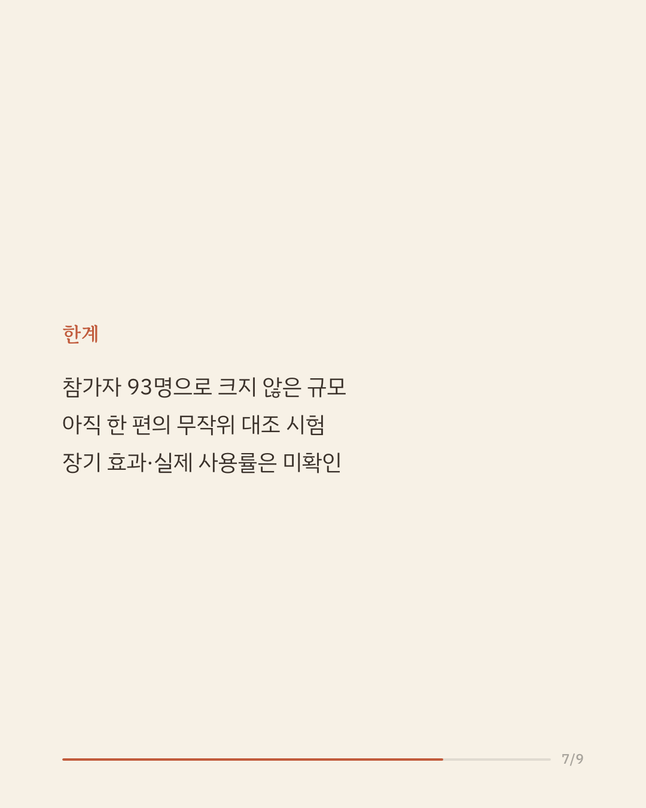
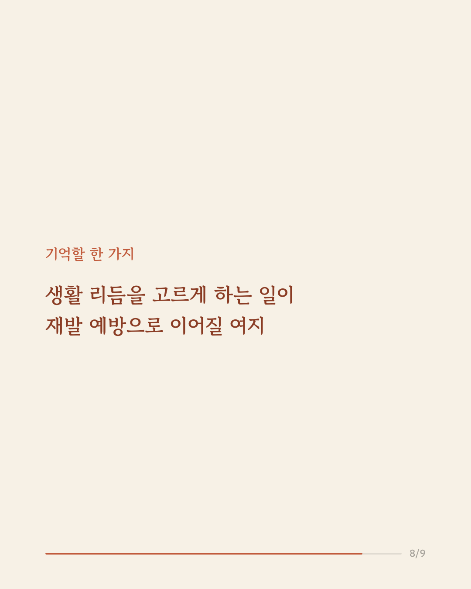
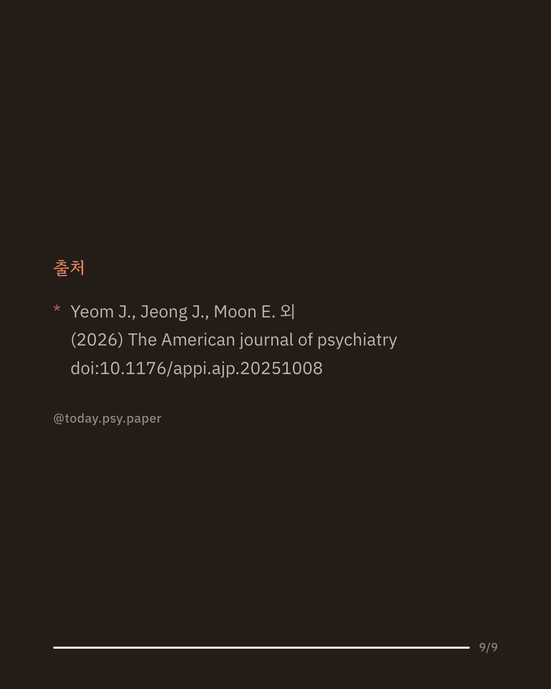

우울증(주요우울장애)과 양극성 장애는 증상이 나아진 뒤에도 기분 삽화가 반복되는 경우가 많아, 재발을 얼마나 막느냐가 장기 경과를 좌우합니다. 수면과 활동 같은 생체리듬의 교란은 이런 재발과 관련이 있다고 알려져 왔습니다. 연구진은 스마트폰의 수동 센서 데이터로 3일 뒤 기분을 예측하고 개인 맞춤 생체리듬 피드백을 주는 앱(CRM)을 개발해, 기분장애 성인 93명을 실제 앱군과 가짜 앱군에 1:1로 배정하고 12개월간 이중맹검으로 추적했습니다. 수정 ITT 분석(80명)에서 가짜 앱군의 재발 빈도는 실제 앱군의 약 3.4배였습니다(발생률비 3.39, 95% CI 1.86–6.17). 재발이 지속된 일수와 재발까지 걸린 시간에서도 실제 앱군이 더 나은 결과를 보였고, 뚜렷한 부작용은 보고되지 않았습니다. 연구진은 CRM이 표준 치료에 더하는, 확장 가능한 디지털 생체리듬 보조 치료가 될 수 있다고 보았습니다. 다만 참가자 수가 93명으로 크지 않고 장기 효과와 실제 사용률은 아직 확인되지 않았습니다. 단일 연구이므로 확대 해석은 조심해야 합니다. 출처: The American Journal of Psychiatry (2026), Circadian Rhythm Stabilization App to Prevent Mood Episode Recurrence in Patients With Mood Disorders. #임상심리 #정신건강정보 #양극성장애 #우울증치료 #디지털치료제
python3 publish.py 42337416